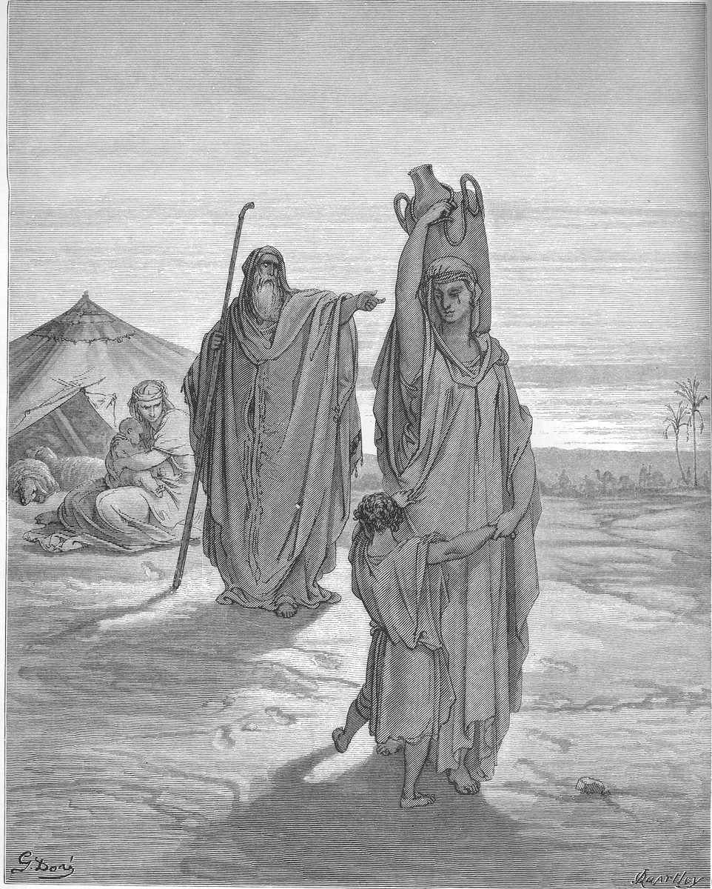

Gálatas 4 — La Traducción Mister

⚠ El versículo 30 cita las palabras con que empieza esta escena: «Echa fuera a esta esclava y a su hijo» (Génesis 21:10, ya en estas páginas). Génesis cuenta que Abraham dio a Agar pan y «un odre de agua» (21:14); Doré dibuja un cántaro. La mujer que sostiene a un niño junto a la tienda sería Sara con Isaac. Pablo convierte la escena en alegoría; Génesis sigue con Dios que oye al muchacho en el desierto (21:17).

Notas del traductor
«Por todo el tiempo que el heredero es menor de edad». Nēpios es un niño pequeño, y en derecho un menor: el hijo que es dueño de todo y no puede decidir nada. La imagen sigue al ayo de 3:24. Está bajo epitropoi y oikonomoi. Epitropos, alguien puesto a cargo, está en tres versículos del Nuevo Testamento: el «mayordomo» del dueño de la viña en Mateo 20:8, Cuza, «mayordomo de Herodes», en Lucas 8:3, y aquí, donde el que está a cargo de un niño es un tutor. Los oikonomoi son «administradores», como en «administradores de los misterios de Dios» (1 Corintios 4:1). La RV60 dice «bajo tutores y curadores hasta el tiempo señalado por el padre»; la NVI dice «bajo el cuidado de tutores y administradores»; la TNM 1987 dice «bajo hombres encargados y bajo mayordomos».
⚠ «Los elementos del mundo» —stoicheia. En el griego corriente los stoicheia son cosas puestas en fila: las letras del alfabeto, los elementos de la materia, los primeros principios de una materia. Algunos lectores oyen también los poderes que se creía que regían los elementos y los astros, lo cual encajaría con el calendario del v. 10. Stoicheion está en siete versículos del Nuevo Testamento: aquí y en el v. 9, Colosenses 2:8 y 2:20, Hebreos 5:12, y 2 Pedro 3:10 y 3:12 (esos dos aún por llegar en esta traducción). Pablo dice que «nosotros» estábamos esclavizados bajo ellos, y en el v. 9 dice lo mismo de los dioses que antes servían sus lectores gentiles: la ley y los ídolos se ponen lado a lado como el estado en que estaba el niño. Qué sentido quiere dar se discute, y esta página no elige (diccionario). La RV60 dice «bajo los rudimentos del mundo»; la NVI dice «por los principios de este mundo»; la TNM 1987 dice «por las cosas elementales que pertenecen al mundo».
«La plenitud del tiempo … nacido de mujer, nacido bajo ley». «La plenitud del tiempo» está en un solo versículo del Nuevo Testamento, este: la fecha que el padre fijó en el v. 2. «Nacido» es genomenon, de ginomai, «llegar a ser», dos veces, donde los vv. 23 y 29 usan gennaō para los nacimientos de los hijos de Abraham. «Envió» es exapostellō, aquí del Hijo y en el v. 6 del Espíritu, y esta traducción imprime «envió» las dos veces. La RV60 dice «cuando vino el cumplimiento del tiempo» y «nacido de mujer y nacido bajo la ley»; la RV 1909 dice «hecho de mujer, hecho súbdito á la ley»; la TNM 1987 dice «que vino a ser procedente de una mujer».
«Comprar y sacar a los que estaban bajo ley … la adopción». Exagorazō es el «nos compró y sacó» de 3:13. Huiothesia, «adopción», el acto legal de hacer a alguien hijo, está en cinco versículos del Nuevo Testamento, todos de Pablo: Romanos 8:15, Romanos 8:23 y Romanos 9:4, donde la adopción pertenece a Israel; este; y Efesios 1:5 (diccionario). La RV60 dice «la adopción de hijos»; la NVI dice «a fin de que fuéramos adoptados como hijos».
⚠ «¡Abba, Padre!» —arameo y griego en un solo clamor. Abba ho patēr: la palabra aramea y la griega que la traduce, una junto a otra (diccionario). El par está en tres versículos del Nuevo Testamento: Jesús en Getsemaní, «Abba —Padre—, todo es posible para ti» (Marcos 14:36); Romanos 8:15, donde «clamamos» nosotros; y aquí, donde es el Espíritu quien clama. El texto crítico dice «nuestros corazones» y el bizantino «vuestros corazones», y por eso la RV60 dice «Dios envió a vuestros corazones el Espíritu de su Hijo»; la TNM 1987, con el texto crítico, dice «a nuestros corazones». En el v. 7 el «tú» pasa al singular, cada lector por sí: «ya no eres esclavo, sino hijo». El texto bizantino dice «heredero de Dios por medio de Cristo», y así la RV60: «también heredero de Dios por medio de Cristo»; la TNM 1987 dice «también heredero, gracias a Dios».
«O más bien que han sido conocidos por Dios». Pablo se corrige a mitad de la frase. Los gálatas no tanto encontraron a Dios como fueron conocidos por él, como en 1 Corintios 8:3, «si alguien ama a Dios, es conocido por él», y 1 Corintios 13:12, «así como también fui plenamente conocido». Antes de eso eran esclavos de «los que por naturaleza no son dioses», los «llamados dioses» de 1 Corintios 8:5. La RV60 dice «o más bien, siendo conocidos por Dios»; la NVI dice «o más bien que Dios los conoce a ustedes».
«Los elementos débiles y pobres … desde el principio». Ptōcha es «pobres», la palabra del mendigo; palin anōthen es «otra vez desde el principio». Los lectores de Pablo eran gentiles que nunca habían guardado la ley. Tomarla ahora es, en sus palabras, «volver otra vez» a la esclavitud bajo los elementos que acaba de describir como la suya antes de Cristo. La RV60 dice «los débiles y pobres rudimentos»; la RV 1909 dice «los flacos y pobres rudimentos»; la NVI dice «esos principios ineficaces y sin valor»; la TNM 1987 dice «las débiles y miserables cosas elementales».
«Días y meses y estaciones y años». Paratēreisthe, «observan con cuidado», es el verbo de los fariseos que «lo observaban de cerca» en sábado (Lucas 14:1) y que «lo vigilaban de cerca» (Marcos 3:2): un mirar atento y ansioso. La lista no nombra ninguna fiesta. Suele leerse como el calendario judío de sábados, lunas nuevas, fiestas y años sabáticos, y a veces como un calendario de los astros, a juego con «los elementos»; el versículo no lo dice. En Romanos 14:5 Pablo es más suave con lo mismo: «Uno considera un día por encima de otro; otro considera todos los días iguales». La RV60 dice «Guardáis los días, los meses, los tiempos y los años»; la TNM 1987 dice «Están observando escrupulosamente»; la NVI dice «¡Ustedes siguen guardando los días, los meses, las estaciones y los años!».
«Haya trabajado en vano con ustedes». Kopiaō es trabajar hasta el cansancio, el «trabajé más que todos ellos» de 1 Corintios 15:10; eikē, «en vano», es la palabra de 3:4. La RV60 dice «que haya trabajado en vano con vosotros»; la TNM 1987 dice «que de algún modo me haya afanado en vano».
«Háganse como yo, porque también yo me hice como ustedes». La segunda cláusula no tiene verbo en griego, hoti kagō hōs hymeis, «porque también yo como ustedes». Esta traducción suple «me hice»: Pablo, judío, vivió entre ellos como uno sin ley, como dice en 1 Corintios 9:21, «a los que están sin ley, como sin ley». La RV60 dice «porque yo también me hice como vosotros»; la RV 1909 dice «porque yo soy como vosotros»; la TNM 1987 dice «porque yo también antes era como ustedes»; la NVI dice «yo me he identificado con ustedes».
⚠ «Una debilidad de la carne» —y el aguijón de 2 Corintios 12. Di’ astheneian tēs sarkos: con acusativo, dia es «a causa de», así que una enfermedad fue la razón por la que Pablo predicó en Galacia, no solo la condición en que predicó. En estos versículos se apoya la lectura que ve una enfermedad en el «aguijón en la carne» (2 Corintios 12:7). To proteron es «la primera vez» o «antes»; Hechos hace pasar a Pablo por «la región de Galacia» dos veces (Hechos 16:6, Hechos 18:23). El texto crítico dice «la prueba que era para ustedes mi carne», su condición como prueba para ellos; el bizantino dice «mi prueba», y por eso la RV 1909 dice «mi tentación que estaba en mi carne». Ekptyō, «escupir», está en un solo versículo del Nuevo Testamento, este; escritores antiguos describen el escupir como un modo de apartar el mal de ojo o un demonio, lo cual encajaría con el mal de ojo de 3:1. En cambio lo recibieron «como a un ángel de Dios», donde en 2 Corintios 12:7 el aguijón era «un ángel de Satanás». La TNM 1987 dice «no lo trataron con desdén ni escupieron contra ello con disgusto»; la RV60 dice «no me despreciasteis ni desechasteis».
«Se habrían arrancado los ojos». Exoryssō, «sacar cavando», está en dos versículos del Nuevo Testamento: los amigos que, «habiendo excavado» el techo, bajan al paralítico (Marcos 2:4), y este. Algunos leen en los ojos una pista de que la enfermedad de Pablo era de la vista; otros, una manera de decir que le habrían dado lo más querido que tenían. «¿Dónde está, pues, su dicha?» usa makarismos, la «dicha» de Romanos 4:6: su sentirse dichosos, o su llamarlo dichoso a él. La RV60 dice «os hubierais sacado vuestros propios ojos para dármelos»; la RV 1909 dice «¿Dónde está pues vuestra bienaventuranza?»; la RV60 dice «¿Dónde, pues, está esa satisfacción que experimentabais?»; la NVI dice «¿qué pasó con todo ese entusiasmo?».
«Muestran interés por ustedes, pero no para bien». Zēloō, tres veces en dos versículos, es la palabra cálida del cortejo; es el verbo de 2 Corintios 11:2, «los celo con el celo mismo de Dios». Los rivales los cortejan para «dejarlos fuera», ekkleiō, el verbo de Romanos 3:27, donde la jactancia «fue dejada fuera». La RV 1909 dice «Tienen celos de vosotros, pero no bien: antes os quieren echar fuera»; la RV60 dice «quieren apartaros de nosotros»; la TNM 1987 dice «quieren aislarlos [de mí]».
⚠ «Hijos míos, por quienes otra vez sufro dolores de parto» —Pablo como madre. Ōdinō, «estar de parto», está en tres versículos del Nuevo Testamento: la mujer de Apocalipsis 12:2, que «clama con los dolores de parto»; este; y el v. 27 de este capítulo, el «tú que no tienes dolores de parto» de Isaías (diccionario). Morphoō, «ser formado», está en un solo versículo, este: hasta que Cristo tome forma en ellos. El texto crítico dice tekna, «hijos»; Westcott–Hort y el texto bizantino dicen teknia, «hijitos», y por eso la RV60 dice «Hijitos míos, por quienes vuelvo a sufrir dolores de parto»; la NVI dice «Queridos hijos». «Cambiar de voz» es cambiar de tono, y «estoy perplejo» es el aporeomai de Festo en Hechos 25:20. La RV60 dice «y cambiar de tono, pues estoy perplejo»; la RV 1909 dice «y mudar mi voz». La Vulgata dice confundor, «estoy avergonzado».
«¿No oyen la ley?». La ley aquí son los libros de Moisés, oídos en lectura pública, y la historia es la de Génesis: Agar dio a Abram un hijo (Génesis 16:15 (ya en estas páginas)) y Sara dio a luz a Isaac (Génesis 21:2 (ya en estas páginas)). Pablo todavía no nombra a ninguno de los dos hijos, ni a Sara; Agar se nombra en dos versículos del Nuevo Testamento, los vv. 24 y 25. Paidiskē es «esclava», la palabra para Agar en el Génesis de esta traducción, «una esclava egipcia» (Génesis 16:1 (ya en estas páginas)) (diccionario). La RV60 dice «¿no habéis oído la ley?»; la NVI dice «¿por qué no prestan atención a lo que la Ley misma dice?».
⚠ «Se dicen en alegoría». Allēgoreō está en un solo versículo del Nuevo Testamento, este, y de él viene la palabra «alegoría»: decir una cosa y significar otra. Si la lectura de Pablo aquí es alegoría en sentido estricto o el emparejar una historia pasada con una presente se discute; la palabra es suya (diccionario). La RV60 dice «Lo cual es una alegoría»; la RV 1909 dice «Las cuales cosas son dichas por alegoría»; la TNM 1987 dice «Estas cosas quedan como un drama simbólico»; la NVI dice «Ese relato puede interpretarse en sentido figurado».
⚠ «Agar es el monte Sinaí en Arabia». Las ediciones difieren en la palabra de enlace, y algunos testigos omiten «Agar»; la Vulgata lo omite, Sina enim mons est in Arabia, «porque el Sinaí es un monte en Arabia». Arabia es adonde fue Pablo después de su llamamiento (1:17). Por qué Agar ha de ser el Sinaí, el versículo no lo explica; entre las propuestas está que los descendientes de Agar vivían en Arabia. «Corresponde» es systoicheō, que está en un solo versículo, este: «estar en la misma fila», de la raíz de los stoicheia de los vv. 3 y 9. La RV 1909 dice «Porque Agar ó Sinaí es un monte de Arabia, el cual es conjunto á la que ahora es Jerusalem»; la TNM 1987 dice «esta Agar significa Sinaí, una montaña de Arabia».
⚠ «La Jerusalén de ahora» —y el uso que se ha hecho de la alegoría. En la historia cristiana este pasaje se leyó como un veredicto sobre el pueblo judío, con la sinagoga como la esclava y la iglesia como la libre, y el v. 30, «Echa fuera a la esclava», se usó para justificar el desprecio hacia los judíos. Ese uso forma parte del registro. No es el argumento del capítulo, que va dirigido a creyentes gentiles que «quieren estar bajo ley» (v. 21) y trata de si deben tomar la circuncisión; y quien lo escribe es un judío que dice en Romanos 11:1: «Dios no ha rechazado a su pueblo, ¿verdad? ¡Que nunca suceda!». «Está en esclavitud con sus hijos» no nombra a ningún pueblo. La TLB, una paráfrasis inglesa, escribe uno en el versículo: «and the Jews, who try to follow that system, are her slave children», «y los judíos, que tratan de seguir ese sistema, son sus hijos esclavos».
«La Jerusalén de arriba … nuestra madre» —e Isaías 54:1. La ciudad de arriba es la «nueva Jerusalén, que bajaba del cielo, de parte de Dios» de Apocalipsis 21:2. El texto bizantino añade «de todos», y por eso la RV60 dice «la cual es madre de todos nosotros». La cita es Isaías 54:1, palabra por palabra como la trae el Antiguo Testamento griego; el hebreo empieza «Canta, oh estéril». En Isaías las palabras se dirigen a una mujer dejada desolada, y los capítulos que la rodean se dirigen a Sion y a Jerusalén. Su «no tienes dolores de parto» es el ōdinō del v. 19. La RV60 dice «Regocíjate, oh estéril, tú que no das a luz»; la NVI dice «Tú, mujer estéril, que nunca has dado a luz, ¡grita de alegría!».
«Ustedes, hermanos, son hijos de la promesa, como Isaac». Tregelles y la Nestle–Aland 28.ª dicen «ustedes»; Westcott–Hort y el texto bizantino dicen «nosotros», y así la RV60: «Así que, hermanos, nosotros, como Isaac, somos hijos de la promesa»; la TNM 1987 dice «Ahora bien, nosotros, hermanos»; la NVI dice «Ustedes, hermanos, al igual que Isaac, son hijos por la promesa». En Romanos 9:7 la misma historia le dio a Pablo «En Isaac te será llamada simiente».
⚠ «Perseguía» —y lo que dice Génesis. En Génesis 21:9 (ya en estas páginas) Sara vio al hijo de Agar «riéndose», metsajeq, la raíz del nombre mismo de Isaac; el Antiguo Testamento griego dice «jugando con Isaac su hijo». Génesis no dice que Ismael persiguiera a Isaac. Pablo lee la escena como hostilidad, como lo hizo también alguna interpretación judía posterior. «Así también ahora» apunta a la presión sobre los gálatas. La RV60 dice «perseguía al que había nacido según el Espíritu»; la TNM 1987 dice «se puso a perseguir al que nació a la manera del espíritu».
⚠ «Echa fuera a la esclava y a su hijo» —palabras de Sara, como Escritura. En Génesis 21:10 (ya en estas páginas) estas son palabras de Sara a Abraham: «el hijo de esta esclava no heredará con mi hijo, con Isaac». Pablo las cita como «lo que dice la Escritura» y escribe «con el hijo de la libre» en lugar de «con mi hijo, con Isaac». En Génesis Dios le dice a Abraham que «escuche su voz» (Génesis 21:12 (ya en estas páginas)), y luego oye al muchacho y le promete a Agar: «haré de él una gran nación» (Génesis 21:18 (ya en estas páginas)). La RV60 dice «Echa fuera a la esclava y a su hijo»; la NVI dice «¡Echa de aquí a la esclava y a su hijo!»; la TNM 1987 dice «Expulsa a la sirvienta y a su hijo».
«No somos hijos de una esclava, sino de la libre». «Una esclava» no lleva artículo; «la libre» sí. La Vulgata lleva la frase hasta las primeras palabras del capítulo siguiente, y termina el versículo con «con la libertad con que Cristo nos ha hecho libres»; en griego eso es 5:1. La RV60 dice «no somos hijos de la esclava, sino de la libre».
Patrones que vale la pena recordar
Donde esta traducción conserva las palabras exactas: «menor de edad» para nēpios en 4:1 y 4:3; «elementos» para stoicheia en 4:3 y 4:9; «envió» para exapostellō en 4:4 y 4:6; «comprar y sacar» en 4:5, como en 3:13; «adopción», como en Romanos 8:15; «¡Abba, Padre!», como en Romanos 8:15; «conocidos por Dios», como en 1 Corintios 8:3; «en vano» para eikē, como en 3:4; «una debilidad de la carne» en 4:13; «dicha» para makarismos, como en Romanos 4:6; «dejar fuera» para ekkleiō, como en Romanos 3:27; «perplejo», como en Hechos 25:20; «dolores de parto» para ōdinō en 4:19 y 4:27; «esclava» para paidiskē en todo el pasaje; y «Echa fuera» en 4:30.
Ecos pagados. El ayo de 3:24 se vuelve tutores y administradores; comprar y sacar e hijos de 3:13 y 3:26; Abba de Marcos 14:36 y Romanos 8:15; conocidos por Dios de 1 Corintios 8:3; la debilidad de la carne y el ángel anunciados en 2 Corintios 12:7; el mal de ojo de 3:1; Arabia de 1:17; Agar y los hijos de Sara de Génesis 16:15 (ya en estas páginas) y Génesis 21:2 (ya en estas páginas); Echa fuera de Génesis 21:10 (ya en estas páginas); en Isaac de Romanos 9:7; la nueva Jerusalén de Apocalipsis 21:2; y la mujer con dolores de parto de Apocalipsis 12:2.
Ecos sembrados. La libertad de 5:1, que la Vulgata une a 4:31; la persecución «ahora» en 5:11 y 6:12; los elementos en Colosenses 2:8 y 2:20; la Jerusalén celestial en Hebreos 12:22; e Isaías 54:1 en su propio capítulo.
Próxima entrega: Gálatas 5, ya en estas páginas. «Para libertad nos libertó Cristo», las obras de la carne y el fruto del Espíritu.